三角函数
【任意角】
由一条射线绕着它的端点旋转而成的图形.旋转开始时的射线叫角的始边.旋转终止时的射线叫角的终边.射线的端点叫角的顶点.
说明: (1) 终边旋转在一周之内的角α，称为0° ~360°的角.可用0°≤α<360°表示.(2) 终边旋转在一周以上的角β，可以化成k·360° ＋α 的形式.其中k∈Z，0°<α<360°.写成集合的形式: {β ｜β ＝k·360° ＋α，k∈Z}
【正角】
按逆时针旋转所成的角.
【负角】
按顺时针旋转所成的角.
【零角】
射线没作任何旋转时，我们也认为形成了一个角，这个角叫做零角.
【终边相同的角】
两个角的始边重合，终边也重合时，称这两个角为终边相同的角.
所有与α 角终边相同的角，连同α 角在内，可以用式子k·360° ＋α，k∈Z 表示.
例 把－572°化成k·360° ＋α，0°≤α <360°，k∈Z的形式.
解－572° ＝－2 ×360° ＋148°.
注意不能写成－572° ＝－360° －212°的形式，因为－212° ＝α，它不在题目要求的0°≤α<360°的范围之内.
【直角坐标系中的角】
使角的顶点与坐标原点重合，角的始边在x 轴的正半轴上，角的终边在坐标系中的位置有下面几种情况:
(1) 角α 的终边在第一象限时，叫第一象限内的角.可用k·360° <α<k·360° ＋90°，k∈Z 表示.
(2) 角α 的终边在第二象限时，叫第二象限的角.可用k·360° ＋90° <α<k·360° ＋180°，k∈Z.表示.
(3) 角α 的终边在第三象限时，叫第三象限的角.可用k·360° ＋180° <α<k0·360° ＋270°，k∈Z 表示.
(4) 角α 的终边在第四象限时，叫第四象限的角.可用k·360° ＋270° <α<k·360° ＋360°，k∈Z 表示.
(5) 角α 的终边在x 轴的正半轴时，可用k·360° ＝α，k∈Z 表示.
(6) 角α 的终边在x 轴的负半轴时，可用α ＝k·360° ＋180°表示k∈Z
(7) 角α 的终边在y 轴的正半轴时，可见α ＝k·360° ＋90°表示k∈Z
(8) 角α 的终边在y 轴的负半轴时，可用α ＝k·360° ＋270°表示k∈Z
说明: 如果α 角的终边在x 轴上可用α ＝n·180°，n∈Z 表示.
a ＝n·180°，n∈Z 代替了α ＝k·360°和α ＝k·360°＋180°k∈Z∵α ＝k·360° ＝2k·180°.而α ＝k·360° ＋180° ＝2k·180° ＋180° ＝ (2k ＋1) ·180°.当k∈Z 时，2k 为偶数，2k ＋1 为奇数.而奇数与偶数合在一起为整数.∴用n∈Z 可代替了2k 与2k ＋1，n∈Z.
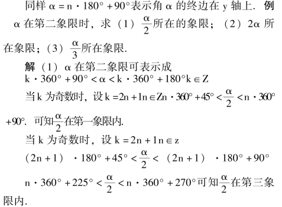
(2) k·720° ＋180° <2α<k·720° ＋360°
2k·360° ＋180° <2α< (2k ＋1) ·360°
当n ＝2k 时，n·360° ＋180° <2α <n·360° ＋360°可知2α 在第三、四象限及y 轴的负半轴上.
注意: y 轴的负半轴不在象限内.
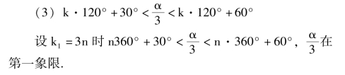
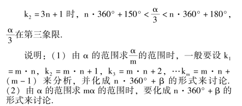
【弧度制】
用弧度作为度量角的单位的量角制.弧度制也叫弪制.
为什么用弧度制量角? 是为了把角的大小与实数的大小一一对应起来.实数是十进制的(因为实数可化为小数，有限，无限小数都是十进制) 而角度制(度、分、秒制) 则是60 进制无法建立简便的对应关系.弧度制是把角度制的60 进制化成了10 进制.这样每一个角都有一个实数(弧度数) 与它对应；反过来，每一个实数也都有一个角(角的弧度数等于这个实数) 与它对应.
“弧度” 这个量角单位可以省略不写，角的大小等于实数时，它的单位就是弧度.
(1) 1 弧度的角等于半径长的弧所对圆心角叫1 弧度的角.
规定: 正角的弧度数是正数，负角的弧度数为负数，零角的弧度数为零.
如图3 －1，＝r，☉O 的半径为r.
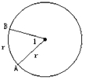
图3-1
则∠AOB ＝－1 弧度，∠BOA ＝1 弧度.
注意: 角是有正负的.
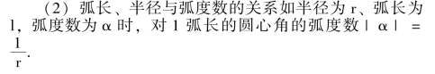
【角度与弧度的互化】
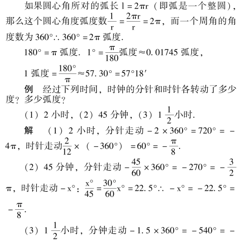
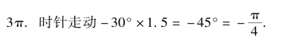
说明: 量角的单位除了角度制，弧度制以外，常用的还有“百分度制”、“密位制” (军事上用).
【百分度制】
【弧长公式】
l ＝｜α ｜·r，式中α 为弧所对的圆心角的弧度数，r是圆的半径.l 为弧长.
例 地球半径约为6.37 ×103km，在北纬45°上两城市间相距30 经度，求这两城市间的球面距离.
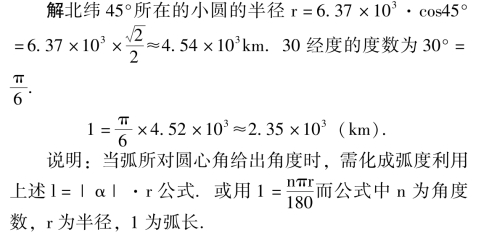
【扇形面积公式】
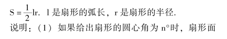
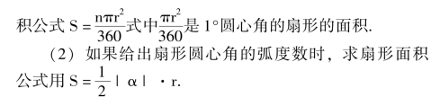
注意: 在计算扇形面积时，根据所给条件的不同，利用不同扇形面积公式.
【任意角的三角函数】
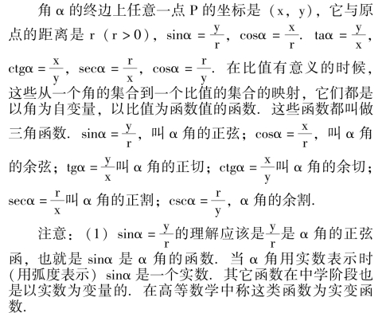
(2) 在0° <α<90°时，三角函数称为锐角三角函数.在这时x、y 为直角三角形的直角边r 为斜边.α 角的三角函数有时也做如下的定义:
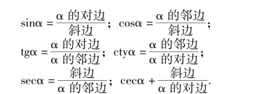
(3) 三角函数是超越函数.它超越了自变量的代数运算(加、减、乘、除、乘方、开方)，在中学里学习的指数函数: y ＝ax(a>0，a≠1)，对数函数: y ＝logax (a>0，a≠1) 也是常见的超越函数.
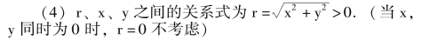
【三角函数的定义域】
自变量α 的取值范围.
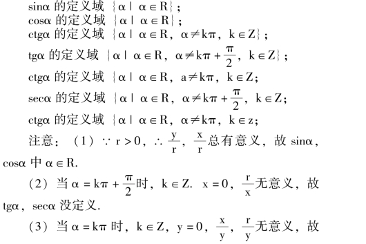
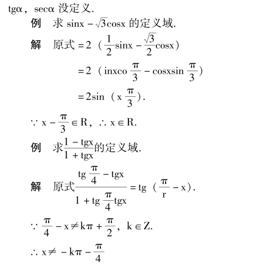
说明: 要把所给式变成标准形式(sinα，cosα，tgα，ctgα，secα，cscα 的形式).再用它们的定义域考虑.
【各三角函数值在每个象限的符号】
由三角函数定义可知: 第一象限中sinα，cosα，tgα，ctgα，secα，cscα 都是正值；第二象限中sinα，cscα，是正值，其余为负值；第三象限中tgα，ctgα 是正值，其余为负值；第四象限中cosα，secα 为正值，其余为负值.
例 根据下列条件，确定角α 的象限:
(1) sinα·cosα>0；(2) secα·ctgα>0；
(3) sinα 与tgα 异号；(4) cosα 与tgα 同号；
(5) sin2α·secα>0；(6) cos2α>0；
解
(1) sinα·cosα>0，即sinα 与cosα 同号.∴α 在第一象限(sinα>0，cosα>0) 或第三象限(sinα<0，cosα<0).
(2) secα·ctgα>0，即secα 与ctgα 同号.∴第一象限(secα>0，ctgα >0) 或第二象限(secα <0，ctgα <0).
(3) sinα 与tgα 异号，α 在第二象限(sinα >0，tgα<0) 或第三象限sinα<0，tgα>0).
(4) cosα 与tgα 同号，α 在第一象限(cosα >0，tgα>0) 或第二象限(cosα<0，tgα<0)
(5) sin2α·secα>0 即sinα·tgα >0，α 在第一象限(sinα>0，tgα>0) 或第四象限(sinα<0，tgα<0).
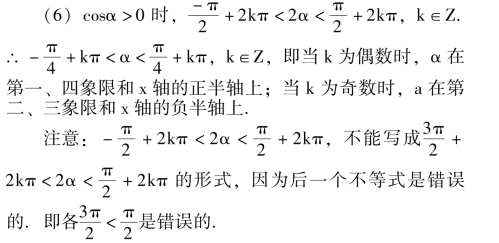
说明: (1) 两个函数同号，即两个函数的积为正；两个函数异号，即两个函数积为负.
(2) 确定角所在象限时，一般只讨论一个函数；两个函数的积.如不是上述形式，要设法改换成(恒等变形) 上述形式讨论.
【特殊角的三角函数值】
其函数值用同角三角函数关系求得.
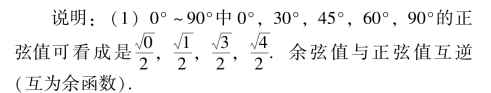
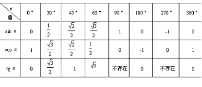
(2) 有时还经常用到15°的三角函数值，它可以用30°的半角或特殊角的差为15° (如60° －45°或45° －30°)求得.也可以用平面几何求得.
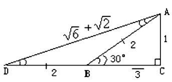
图3-2
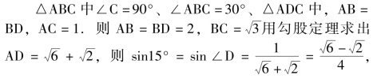
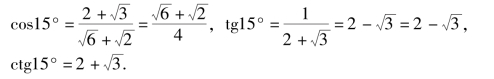
【同角三角函数的基本关系式】
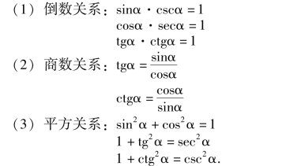
说明:
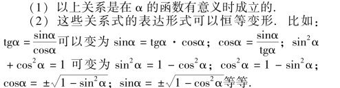
(3) 为了记忆和灵活变形可以用如图3 －3 的六边形表示.
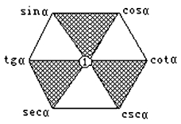
图3-3
①对角线上两函数关系是倒数关系；
②有阴影部分的三角形上面两函数的平方和等于三角形另一顶点函数的平方；
③每一个函数等于相邻两函数的积，或相邻的三个函数按顺时针第一个除以第二个等于第三个的倒数，如sinα÷cosα ＝tgα；cosα÷ctgα ＝sinα 等.
注意: sin2α ＝ (sinα)2，cos2α ＝ (cosα)2，
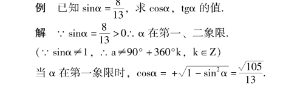
注意: 已知一个函数值求同角的其它函数值，要先判断角所在的象限，根据象限不同确定各函数的正负.
例 已知: secα ＝3.求其它三角函数值.
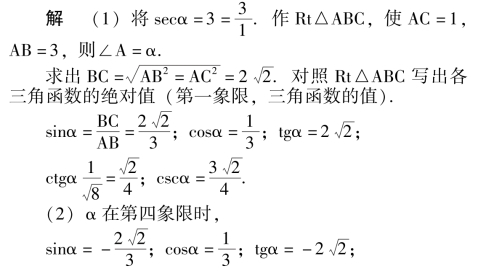
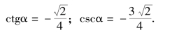
【诱导公式】
由任意角化成锐角的公式.公式有五组:
(1) 终边相同的角
sin (k·360° ＋α) ＝sinα；
cos (k·360° ＋α) ＝cosα；
tg (k·360° ＋α) ＝tgα；
ctg (k·360° ＋α) ＝ctgα；
sec (k·360° ＋α) ＝secα；
csc (k·360° ＋α) ＝cscα.
(2) 180° ＋α 的角
sin (180° ＋α) ＝－sinα；
cos (180° ＋α) ＝－cosα；
tg (180° ＋α) ＝tgα；
ctg (180° ＋α) ＝ctgα；
sec (180° ＋α) ＝－secα；
csc (180° ＋α) ＝－cscα，
(3) －α 的角
sin ( －α) ＝－sinα；
cos ( －α) ＝cosα；
tg ( －α) ＝－tgα；
ctg ( －α) ＝－ctgα；
sec ( －α) ＝secα；
csc (α) ＝－cscα.
(4) 180° －α 的角
sin (180° －α) ＝sinv；
cos (180° －α) ＝－cscα；
tg (180° －α) ＝－tgα；
ctg (180° －α) ＝－ctgα；
sec (180° －α) ＝－secα；
csc (180° －α) ＝cscα.
(5) 360° －α 的角
sin (360° －α) ＝－sinα；
cos (360° －α) ＝cosα；
tg (360° －α) ＝－tgα；
ctg (360° －α) ＝－ctgα；
sec (360° －α) ＝secα；
csc (360° －α) ＝－cscα.
【化任意角三角函数为锐角三角函数的步骤】
任意负角三角函数→任意正角三角函数→0° ~360°间角的三角函数→0° ~90°间角的三角函数.
例 化简
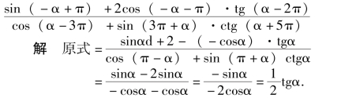
说明: 如果把nπ ＋α 的各三角函数化为α 的三角函数可以有以下关系:
sin (nπ ＋α) ＝ ( －1)nsinα；(n∈Z).
cos (nπ ＋α) ＝ ( －1)ncosα；
tg (nπ ＋α) ＝tgα；
ctg (nπ ＋α) ＝ctgα；
sec (nπ ＋α) ＝ ( －1)nsecα；
csc (nπ ＋α) ＝ ( －1)ncscα；
【用单位圆中的线段表示三角函数值】
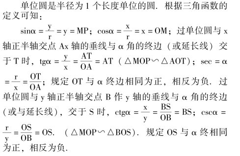
MP，OM，AT，BS，OT，OS 这些有向线段叫做角α的正弦线、余弦线、正切线、余切线、正割线、余割线，统称三角函数线.
说明: 利用三角函数线可以直观地看出各三角函数值的变化及有关的性质.如当α ＝90°时，AT 线与α 的终边平行，所以不存在线段AT，或称之为AT 无穷大.(直线AT 可无限延伸).同样余切在α ＝k·180° (k∈Z) 时BS也成为直线(无穷大).
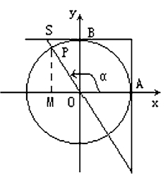
图3-4
【正弦函数的图象和性质】
y ＝sinx 中以x 的任一值与它对应的y 值作(x，y)在直角坐标系中，作出y ＝sinx 的图形叫正弦函数的图象.如图3 －5 因为x 是任意实数，所以正弦函数的图象是无限的.
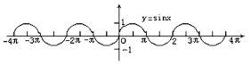
图3-5
y ＝sinx 有以下性质
(1) 定义域x∈R；
(2) 值域｜y ｜≤1 即
｜sinx ｜≤1 ( －1≤sinx≤1)；
(3) y ＝sinx 是奇函数，即sin ( －x) ＝－sinx 图象对称于原点；
(4) y ＝sinx 是周期函数，它的周期为2kπ (k∈Z 且k≠0)，最小正周期T ＝2π；
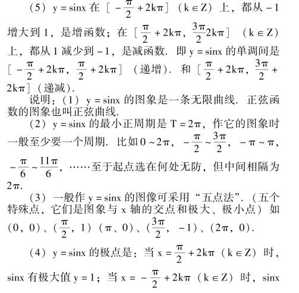
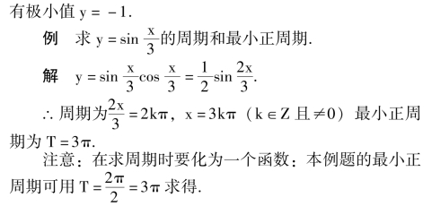
【余弦函数的图象和性质】
在y ＝cosx 中，以x 的任一值与它对应的y 值作为(x，y) 在直角坐标系中，作出y ＝cosx 的图形叫余弦函数的图象，也叫余弦曲线，如图3 －6.因为x 为意实数，所以余弦函数的图象是一条无限曲线.
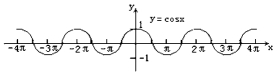
图3-6
y ＝cosx 有以下性质:
(1) 定义域x∈R；
(2) 值域｜y ｜≤1 即｜cosx ｜≤1 ( －1≤cosx≤1)；
(3) y ＝cosx 是偶函数，即cos ( －x) ＝cosx，图象对称于y 轴；
(4) y ＝cosx 是周期函数.它的周期为2kπ (k∈Z 且k≠0)，最小正周期T ＝2π；
(5) y ＝cosx 在[2kπ，π ＋2kπ] (k∈Z) 上，都从1 减小到－1，是减函数；[π ＋2kπ，2π ＋2kπ] 上，都从－1 增大到1，是增函数.即y ＝cosx 的单调区间是[2kπ，π ＋2kπ] (递减) 和[π ＋2kπ，2π ＋2kπ] (递增).
说明: (1) y ＝cosx 的最小正周期T ＝2π，作它的图象一般至少一个周期.比如0 ~2π，或中间相差2π 的任意两个x 的值.
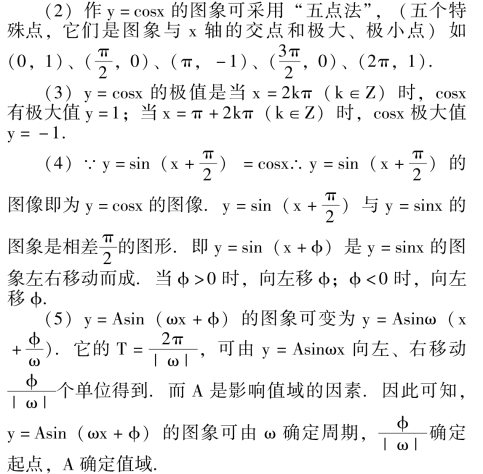
例 求y ＝2cos2x －5 的最大、最小值，并求出取得这些时的x 的值.
解y ＝2cos2x－5 ＝cos2x－4
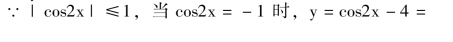
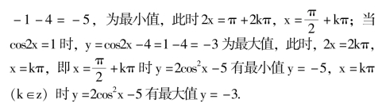
【正切函数的图象和性质】
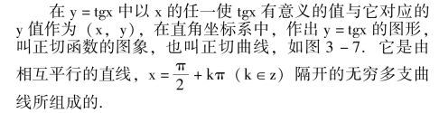
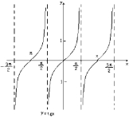
图3-7
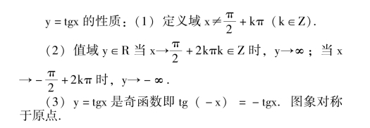
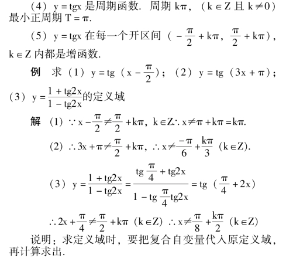
【余切函数的图象和性质】
在y ＝ctgx 中，以x 的任一使ctgx 有意义的值与它对应的y 值作为(x，y)，在直角坐标系中，作出y ＝ctgx的图形叫余切函数图象.也叫余切曲线.如图3 －8.它是由相互平行的x ＝kπ (k∈Z) 直线隔开的无穷多支曲线所组成的.
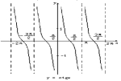
图3-8
y ＝ctgx 的性质:
(1) 定义域x≠kπ (k∈Z)
(2) 值域y∈R，当x→2kπ 时，y→∞；当x→(2k＋1) π 时，y→－∞.
(3) y ＝ctgx 是奇函数，即ctg ( －x) ＝－ctgx，图象对称于原点.
(4) y ＝ctgx 是周期函数，周期为kπ (k∈Z 且k≠0)，最小正周期T ＝π.
(5) y ＝ctgx 在每一个开区间(kπ，(k ＋1) π) (k∈Z) 内部是减函数.
例 作下列各函数图象的草图.
(1) y ＝sin ｜x ｜；(2) y ＝－cosx；
(3) y ＝｜tgx ｜；(4) y ＝－ ｜ctgx ｜；
解 (1) ∵sin ｜ －x ｜ ＝sinx∴它是偶函数.对称于y 轴，如图3 －9.
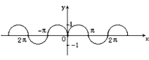
图3-9
(2) y ＝－ cosx 的图象与y ＝cosx 图象以x 轴翻转，即两图象对称于x 轴，例图3 －10.
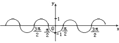
图3-10
(3) ∵ ｜tgx ｜≥0.∴y≥0 即当tgx <0 时，图象翻转到x 轴上方，与原图象x 轴下方的图形对称于x 轴.例图3 －11.
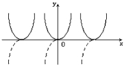
图3-11
(4) ∵ － ｜ctgx ｜≤0.∴y≤0 即当ctgx >0 时，图象翻转到x 轴下方，与原图象x 轴上方的图形对称于x轴.例图3 －12.
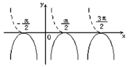
图3-12
【正割函数的图象和性质】
在y ＝secx 中，以x 的任一使secx 有意义的值与它对应的y 值作为(x，y).在直角坐标系中作出的图形叫正割函数的图象，也叫正割曲线.如图3 －13.
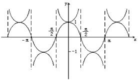
图3-13
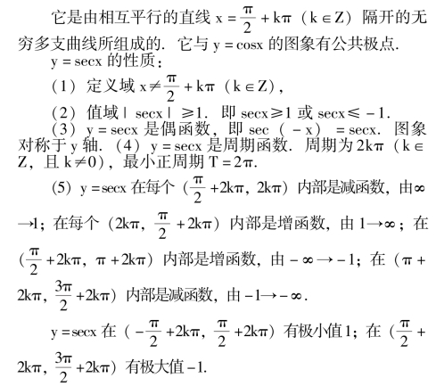
【余割函数的图象和性质】
在y ＝cscx 中以y 的任一使cscx 有意义的值与它对应的y 值作为(x，y)，在直角坐标系中作出的图形叫余割函数的图象，也叫余割曲线，如图3 －14.
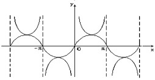
图3-14
它是由相互平行的直线x ＝kπ (k∈Z) 隔开的无穷多支曲线所组成的.它与y ＝sinx 的图象有公共极点.
y ＝cscx 的性质:
(1) 定义域；x≠kπ，(k∈Z)
(2) 值域｜cscx ｜≥1 即cscx≥1 或cscx≤－1.
(3) y ＝cscx 是奇函数，即csc ( －x) ＝－cscx.图象对称于原点.
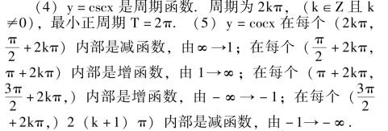
y ＝cscx 在(2kπ，2kπ ＋π) 有极小值1；在(π ＋2kπ，2 (k ＋1) π) 有极大值－1.
例 在同一坐标系中，作出y ＝sinx 和y ＝tgx 的草图x∈[ －π，π]
解如图3 －15.
图3-15
注意:
(1) 在所给区间内，y ＝tgx 有三条曲线.
(2) ∵ ｜sinx ｜≤｜tgx ｜，∴正弦曲线与正切曲线只有在x ＝kπ 时，有公共值y ＝0，两曲线不可能有交叉点.
【最小正周期】
周期函数中周期如果存在一个最小的正数时，就把这个最小的正数叫做最小正周期.
【简谐振动的振动幅】
物体振动的数学表达式为y ＝Asin (ωx ＋ϕ).(A≠0，ω>0)，x∈[0，＋∞)，A 叫做这个振动的振幅，它表示一个振动量离开平衡位置的最大距离.
【简谐振动的周期】
【简谐振动的频率】
【相位】
y ＝Asin (ωx ＋ϕ) 中ωx ＋ϕ 叫做相位，当x ＝0 时的相位ωx ＋ϕ ＝ϕ 叫初相.
例 下面是一些正弦函数y ＝Asin (ωx ＋ϕ) 原变化图形.根据图中所给数据写出正弦函数的表达式.并说明根据.
图3-16
(2) 已知: 如图3 －17，
图3-17
图3-18
说明: 这种练习对于y ＝Asin (ωx ＋ϕ) 的理解可以加深.
【两角和的三角函数】
【两角差的三角函数】
说明: 两角差的三角函数，可由两角和的三角函数求得，它们的关系是α－β ＝α ＋ ( －β).
【二倍角的三角函数】
说明: 二倍角三角函数可由两个相同角的和的三角函数求得.即2α ＝α ＋α.
【三个角的和的三角函数】
【三倍角的三角函数】
说明: 根据题中需要有时要把角变形，变形时要考虑到相关的部分.
∴2ctgB ＝ctgA ＋ctgC，即ctgA，ctgB，ctgC 成等差数列.
说明: 在分子、分母为齐次式时可用分式的基本性质，同除同一个不等于0 的值，化成正切.
注意: 角所在象限，函数值的符号.
例 已知PO⊥平面M，AO ＝2cm，BO ＝12cm，α －β ＝45°，如图3 －19
求: PO 长.
图3-19
解 设PO ＝x，
解 出x1 ＝4，x2 ＝6.
∴PO 为4cm 或6cm.
例 用数学归纳法证明
∴当n ＝1 时等式成立
(2) 若当n ＝k 时等式成立，即
∴当n ＝k ＋1 时等式成立.
根据(1)、(2)，对于一切n∈N，等式都成立.
例 若tgα，tg2β，tgβ 成等差数列，求证tg (α －β)＝sin2β.
证∵tgα、tg2β、tgβ 成等差数列
∴tgα ＋tgβ ＝2tg2β，
说明: 注意各学科间的联系.
例 求下列各式的值.
(1) sin18°；(2) cos18°；(3) tg18°.
解 (1) 设α ＝18°，则5α ＝90°，2α ＝90° －3α，因此sin2α ＝sin (90° － 3α) ＝cos3α 则2sinαcosα ＝4cos3α－3cosα
∵α ＝18°，cosα≠0，除以上式两边
∴2sinα ＝4cos2α－3 ＝4 (1 －sin2α) －3
即4sin2α ＋2sinα－1 ＝0
用同样的方法可以推出
例 已知Rt△ABC 中∠B ＝90°AB ＝BC.
BD ＝DE ＝DC.∠BAD ＝β，∠DAE ＝α.
图3-20
求sinα 的值.
解在Rt△ABD 中
说明: 要注意角的变化.
【半角的三角函数】
【万能公式】
说明: 三角中“1” 要灵活使用，解法二中1 ＝sin2θ＋cos2θ，且1 ＝tg45°.
说明: 在求算术根时，要注意算术根不负.
例 用数学归纳法证明
∴当n ＝1 时，等式成立.
(2) 设n ＝k 时等式成立，则当n ＝k ＋1 时有:
∴当n ＝k ＋1 时等式成立
根据(1) (2).当n∈N 时等式成立.
图3-21
解四 如图3 －21，用Rt△ABC 使∠A ＝15°，∠BDC＝30°，AD ＝BD，并令BC ＝1.
图3-22
图3-23
【三角函数的积化和差】
【同名三角函数的和差化积】
说明: cosαcos2αcos4α 可用补成正弦的倍角公式的方法处理.即
例 已知△ABC 的三边a、b、c 成等比数列，则cos(A－C) ＋cosB ＋cos2B 为定值.
证∵a、b、c 成等比数列，∴b2 ＝ac
由正弦定理得sin2B ＝sinA·sinC
【化asinx ＋bcosx 为一个角的正弦】
【反正弦函数】
【反正弦函数的图象和性质】
图3-24
说明: 反三角函数的运算是学习中的重点，也具有一定的难度.它可以把三角函数的恒等变形公式用到计算中来.
(1) 特殊值的反三角函数值的三角运算，一般先化成特殊角再计算.
(2) 非特殊值的反三角函数值的三角运算一般步骤是:
①用辅助角表示题目中的反三角函数值，根据条件写出这些辅助角的范围，并写出与这个反三角函数值相应的三角函数值；
②根据三角恒等变换公式，来确定应该求出哪些三角函数值；
③利用已知一个角的三角函数值，求这个角的其它有关三角函数值的方法，求出所需要的三角函数值，代入原式进行运算.
【反余弦函数】
y ＝cosx 在x∈[0，π] 的反函数.记作x ＝arccosy.习惯上用x 表示自变量，y 表示函数，所以写成y ＝arccosx.它的定义域x∈[ －1，1]，值域y∈[0，π].
说明(1) 在y ＝cosx 中，当x 确定时，y 有唯一确定的值与它对应.而当y 确定时，x 则不确定.为了定义反余弦函数.才限定了[0，π] 这个单调区间.
如果在单调区间x∈[2kπ，π ＋2kπ] 和x∈[2kπ－π，2kπ] 定义反余弦时可记作y ＝Arccosx、只有在单调区间才能定义反余弦函数.
(2) cos (arccosx) ＝x，是有条件的，其中x ∈[ －1，1]，arccosx∈[0，π].
【反余弦函数的图象和性质】
反余弦函数的图象与余弦在[0，π] 的图象对称于y ＝x.
y ＝arc cosx 性质
(1) 在[ －1，1] 上是减函数；
(3) 对于x∈[ －1，1]，有arc cos ( － x) ＝π －arc cosx.
证 由－1≤x≤1 得1≥－x≥－1，即－x 属于反余弦函数的定义域[ －1，1].
∵cos (π－arccosx) ＝－cos (arc cosx) ＝－x.
因此π－arc cosx 是余弦等于－x 的一个值.
又∵0≤arc cosx≤π，∴0≥－arc cosx≥－π.
则π≥π－arc cosx≥0，即π－arc cosx∈[0，π].
因此π －arc cosx 是属于[0，π]，且它的余弦等于－x 的一个值.则arc cos ( －x) ＝π－arc cosx.
图3-25
说明: 证明这个反三角函数恒等式必须证明三点:(1) －x∈[ －1，1]；(2) cos (π －arc cosx) ＝－x，(3) (π－arc cosx) ∈[0，π]，三者缺一不可.
【反正弦函数】
图3-26
【反正切函数的图象和性质】
y ＝arctgx 的图象与y ＝tgx 的图象对称于y ＝x.
反正切函数的性质.
(1) 反正切函数y ＝arc tgx 在区间( －∞，＋∞) 上是增函数:
(2) 反正切函数是奇函数，有arctg ( －x) ＝－arc tgx；
【反余切函数】
y ＝ctgx 在x∈(0，π) 的反函数.记作y ＝arcctgx，它的定义域是( －∞，＋∞).值域是(0，π).
由定义可推出ctg (arcctgx) ＝x.其中x∈( －∞，＋∞)，arcctgx∈(0，π).
说明: arcctgx 的主值区间是(0，π) 开区间.
【反余切函数的图象和性质】
y ＝arcctgx 的图象与y ＝ctgx 图象对称于y ＝x.
图3-27
反余切函数的性质:
(1) 反余切函数y ＝arcctgx 在区间( － ∞，＋∞)上是减函数.
(3) 反余切函数有以下关系:
arcctg ( －x) ＝π－arcctgx，x∈( －∞，＋∞).
证 由诱导公式与反余切函数的定义得
ctg (π－arc ctgx) －ctg (arcctgx) ＝－x，
已知0 <arcctgx<π，即0 > －arcctgx> －π.
∴0 <π －arcctgx <π，即(π －arcctgx) ∈(0，π).又知，－x∈( －∞，＋∞)，由反余切函数定义
可知: arcctg ( －x) ＝π－arcctgx.
说明: 证明时要注意三点:
(1) －x∈( －∞，＋∞)；(2) ctg (π －arcctgx)＝－x；(3) (π－arcctgx) ∈(0，π).
例 作出y ＝｜arcctgx ｜在(0，π) 的图象，和y ＝arcctg ｜x ｜的图象，加以比较.
解y ＝｜arcctgx ｜的图象与y ＝arcctgx 图象相同；
图3-28
y ＝arc ctg ｜x ｜的图象在第一、二象限，在第二象限的部分与y ＝arcctgx 图象的第一象限的图形对称于y 轴，如图3 －28.
【反正割函数】
图3-29
【反正割函数的图象和性质】
【反余割函数】
图3-30
【反余割函数的图象和性质】
(1) 反余割函数在x∈[1，＋∞) 和x∈( － ∞，－1] 上都是减函数；
(2) 反余割是奇函数.即arccsc ( －x) ＝－arccscx，图象对称于原点；
说明: 反正割函数和反余割函数不要给学生讲解.
【反三角函数】
反正弦函数(y ＝arcsinx，｜ x ｜ ≤1)，反余弦函数(y ＝arccosx，｜ x ｜ ≤1)，反正切函数(y ＝arctgx，x∈R)，反余切函数(y ＝arcctgx，x∈R)，反正割函数(y ＝arcsecx，｜x ｜≥1)，反余割函数(y ＝arccscx，｜x ｜≥1) 统称反三角函数.
说明: 反函数可记作y ＝sin －1x (反正弦函数)；y ＝cos －1x (反余弦函数)；y ＝tg －1x (反正切函数)；y ＝ctg －1x (反余切函数)；y ＝sec －1x (反正割函数)；y ＝csc －1x (反余割函数).
说明: 对反三角函数值进行三角运算，只要根据定义把反三角函数值看作主值区间内的角(弧度数)，就可以按照计算三角函数值的方法进行.这样，有关三角函数的和、差、倍、半等恒变形公式就可以用于反三角函数值的三角运算了.
【三角方程】
含有未知角的三角函数的方程叫三角方程.
【最简单的三角方程】
sinx ＝a；cosx ＝a；tgx ＝a；ctgx ＝a.称为最简单的三角方程
(1) sinx ＝a 的解集
③｜a ｜ <1 时，{x ｜x ＝2kπ ＋arcsina，k∈Z} ∪
{x ｜x ＝ (2k ＋1) π －arcsina，k∈Z}.把这个解的并集可合并为{x ｜x ＝kπ ＋ ( －1) karcsina，k∈Z}.
(2) cosx ＝a 的解集
①当｜a ｜ >1 时，x ＝Φ.
②当｜a ｜ ＝1 时，{x ｜x ＝2kπ ＋arccosa，k∈Z}.
③当｜a ｜ <1 时，{x ｜x ＝2kπ±arccosa，k∈Z}.
(3) tgx ＝a 的解集
{x ｜x ＝kπ ＋arctga，k∈Z}
(4) ctgx ＝a 的解集
{x ｜x ＝kπ ＋arcctga，k∈z}
说明: 解三角方程时，解也可不用解集表示.
【可化成同名同角的三角方程的解法】
例 解方程sin2x－cos2x ＝cosx.
解原方程化为2cos2x－1 ＋cosx ＝0.
说明: 方程两边同乘以一个含有未知数的式子时，方程可能增根，应该加以检验.
解去分母方程两边同乘以sin2x·cos2x，
得sin3x·cos2x ＝cos3x·sin2x
移项化简sin (3x－2x) ＝0
即sinx ＝0∴x ＝kπ
检验: 当x ＝kπ 时，sin2x ＝sin2kπ ＝0，原方程中有分母为零，故x ＝kπ 不是原方程的解，舍去.
∴原方程无解.
说明: 方程增根的原因是由于方程变形中破坏了方程的同解性.常见的增根现象有:
(1) 方程两边同乘以含有未知数的式子；
(2) 方程两边同时乘方；
由tg2x－3 ＝0 得tgx ＝ 3，∴x ＝±60° ＋k·180°
在0°≤x <360°中x 可得: 30°，60°，°120°，150°，210°，240°，300°，330°.
经检验上面各值都是原方程的解.
例 设x 的二次方程
有重根，确定θ 的值.
解有重根时Δ ＝0.
【可化成一边为零而另一边是若干个因式的积的三角方程的解法】
注意: 在化简方程时，要力求使过程简化.
说明: 把方程一边化为零只须移项，而另一边化积一般可利用因式分解或同名函数和差化积.
例 求满足sin2x ＋sinx ＝2sin2x ＋cosx 的锐角x.
解 移项sin2x ＋sinx－2sin2x－cosx ＝0.
2sinx (cosx－sinx) － (cosx －sinx) ＝0.(cosx －sinx) (2sinx－1) ＝0.
由cosx－sinx ＝0 得tgx ＝1∵x 为锐角∴x ＝45°，
说明: cosx － sinx ＝0 可变为sinx ＝cosx 两边同除以cosx 得tgx ＝1.x ＝45°.可不必检验，∵cosx 与sinx 不同时为零，可令cosx≠0.
【形如asinα ＋bcosα ＝c 的三角方程的解法】
【关于sinα 和cosα 的齐次方程的解法】
例 解方程5sinx ＋2cosx ＝0.
解 ∵sinx 与cosx 不同为零，令cosx≠0，用cosx 除方程的两边
例 解方程3sin2x－4sinxcosx ＋5cos2x ＝2.
解 用sin2x ＋cos2x ＝1 代入
3sin2x－4sinxcosx ＋5cos2x ＝2 (sin2x ＋cos2x)
化简得sin2x －4sinxcosx ＋3cos2x ＝0 方程两边同除以cos2x 得tg2x－4tgx ＋3 ＝0
(tgx－3) (tgx－1) ＝0.
由tgx－3 ＝0 得tgx ＝3，x ＝kπ ＋arc tg3.
【解三角方程的增根、遗根问题】
(1) 用含有未知数的式子乘以方程的两边，可能产生增根.
(3) 在方程变形过程中，扩大了未知数的取值范围可产生增根.
(4) 用含有未知数的式子除方程的两边，可能产生遗根.
例 解方程cos2x ＝cosx－sinx.
解 cos2x－sin2x ＝cosx－sinx.
(cosx ＋sinx) · (cosx－sinx) ＝cosx－sinx
当cosx－sinx≠0 时cosx ＋sinx ＝1
说明: 为了避免除含有未知数的式子，应移项，提公因式.
(5) 如方程变形缩小了定义域，可能产生遗根.
例 解方程sinx－cosx ＝1.
解 用万能公式
说明: 因为原方程无正切的定义域限制.
说明: 有些方程可以用换元法解.
图3-31
求: (1) S2＋T2的取值范围.
(2) 当S2＋T2最大时，△APB 是怎样的三角形.
【解三角形】
已知三角形的三个元素(至少有一个边) 求其它元素叫解三角形.三角形的元素指它的边和角.
【正弦定理】
在一个三角形中，各边和它所对角的正弦比相等.
(2R 是△ABC 外接圆的直径).
【余弦定理】
三角形任何一边的平方，等于其它两边平方的和减去这两边与它们夹角的余弦的积的两倍.
(2) 当有一个直角的三角形时，如∠C ＝90°这时c2＝a2＋b2－2ab·cos90° ＝a2＋b2.可见勾股定理是余弦定理的特例.
【射影定理】
在直角三角形中，斜边上的高等于两直角边在斜边上射影的比例中项；每条直角边平方等于斜边和它在斜边上射影的乘积.
如图3 －32，△ABC 中∠C ＝90°.CD⊥AB.a，b，c为边，h 为斜边上的高，b′、a′为b、a 在斜边C 上的射影.h2＝a′b′；a2＝a′c；b2＝b′c.即h2＝abcosAcosB；a2＝accosB；b2＝bcosA.
图3-32
【三角形面积的求法】
常用的有:
说明: 已知三角形三边，求面积用它较为直接.
【直角三角形的解法】
(1) 解的主要根据
①两锐角互余: 当C ＝90°时，A ＋B ＝90°
②勾股定理: ∠C ＝90°，a2＋b2＝c2.
③锐角三角函数定义.
(2) 典型题: 已知①斜边、锐角；②斜边、直角边；③直角边、锐角；④两直角边.解直角三角形.
【斜三角形的解法】
(1) 解法主要根据:
①三角形内角和A ＋B ＋C ＝180°；
②正弦定理； ③余弦定理.
(2) 典型题的解法；
①已知两边一夹角解三角形，先用余弦定理；
②已知三边解三角形，先用余弦定理；
③已知两角一边解三角形，先用正弦定理；
④已知两边一对角，解三角形，先用正弦定理，它的解，情况如下表:
注意: 当sinα>0 时，在△ABC 中，α 有两解，一锐角，一钝角.例如图3 －33，在△ABC 中AB ＝5，AC ＝4，BC ＝7，求BC 边上的中线AD 的长.
图3-33
例 已知正方形ABCD 中，E 为BC 上任一点，AF 平分∠DAE.求证: BE ＋DF ＝AE.
图3-34
说明: 利用解三角形的方法可以证明一些平面几何中的问题.
例 已知: △ABC 内接于圆，AB ＝AC，D 为圆周上任一点，如图3 －35.
求证: AB ＋AC>DB ＋DC.
图3-35
证 设外接圆半径为R.∠ACB ＝α，∠ACD ＝β.则∠DBC ＝α－β.
(∵AB ＝AC，∠ABC ＝α)
∴AB ＝2Rsinα，DB ＝2R·sin (α ＋β).
DC ＝2R·sin (α－β)
∴DB ＋DC ＝4Rsinαcosβ.
∴ (AB ＋AC) － (DB ＋DC) ＝4Rsinα －4Rsinα·cosβ
＝4Rsinα (1 －cosβ) >0.
∵R>0，α，β 锐的sinα>0，1 －cosβ>0
∴AB ＋AC>DB ＋DC.
例 已知: 四边形ABCD 内接于圆，如图3 －36
求证: AB·CD ＋AD·BC ＝AC·BD
图3-36
图3-37
图3-38
例 已知▱ABCD，AD ＝2，AB ＝4，AC 与BD 相交成45°角.求▱ABCD 的面积
注意: △AOD 和△COD 是等底等高的三角形，而△AOB 和△COD 是全等三角形.所以▱ABCD 的面积是由四个等积三角形组成.
例 已知△ABC 中，AB ＝AC，∠ABC ＝40°，延长AB 至D，使AD ＝BC，连结DC.
求证: ∠BCD ＝10°.
图3-39
证 设∠BCD ＝α，则∠ACD ＝40° ＋α.
∵∠D ＝40° －α
∴sin (40° ＋α) ·sin40° ＝sin80°·sin (40° －α).
sin (40° ＋α) sin40° ＝2sin40°cos40°sin (40° －α).
sin (40° ＋α) ＝sin (40° － α) cos40°积化和差sin(40° ＋α) －sin (80° －α) ＝－sinα.
sin (40° ＋α) ＝sin (80° －α) ＝－sinα.和差化积2cos60°·sin (α－20°) ＝－sinα
－sin (20° －α) ＝sin ( －α).
∴ － (20° －α) ＝－α
则α ＝10°
注意: sin (20° － α) ＝sin ( － α) 的解法应是sin(20° －α) －sin ( －α) ＝0.和差化积得.
2cos (10° －α) sin10° ＝0，∵sin10°≠0.
∴cos (10° －α) ＝0，10° －α ＝0 则α ＝10°，
或由sin (20° －α) ＝sin ( －α) 得出
①20° －α ＝－α②20° －α ＝180° ＋α
α ＝10°∵α<0，∴无解.
例 正方形ABCD 内有一点P.PA，PB，PC 分别是7，5，1.求正方形ABCD 的面积(如图3 －40).
图3-40
解 设∠ABP ＝θ，边长为x，则∠PBC ＝90° －θ
由余弦定理得
由(1)，(2) 消去θ 得x4 －50x2 ＋576 ＝0，
∴x2＝32 或x2＝18.由(1) 得
∵x2－10xcosθ ＝24，∴x2>24.
则正方形的面积为32.
说明: 或由(2) 得x2＋24 ＝10xsinθ 平方
x4＋48x2＋576 ＝100x2·sin2θ.
(3) 由(1) 得x2－24 ＝10xcosθ 平方得
(3) ＋ (4) 2x4＋1152 ＝100x2
x4－50x2＋576 ＝0.
例 已知△ABC 中，三边成等差数列，C ＝2A.(C 角最大，A 角最小).求证: 符合条件的三角形为锐角三角形，且彼此都相似.
证 设三个角A，B，C，且C ＝2A，它们的对边分别为a－d，a，a ＋d，(d>0)
解出a ＝5d.∴三角形三边分别为4d，5d，6d.对应边成比例(各角也相等) ∴符合条件的三角形都相似.
C 为最大角cosC>0，∴C 为锐角.
例 延长正△ABC 的BC 边到D，使CD ＝BC，在AB 上取一点M，连结MD 交AC 于N，若BM∶ CN ＝4∶ 3，且∠BDM ＝α，求α.
图3－41
说明: 以上一些例题，是从用三角法解平面几何题组织的.
例 已知P—ABCD 为正四棱锥，底面边长为200，侧棱长为150.求侧面和底面所成的角.
解 作PO⊥底ABCD，O 为正方形的中心.取AB 中点R，连结PR，OR，PR⊥AB.OR⊥AB (∵AO ＝BO).
图3-42
∴∠ORP 为侧面与底面所成的角.
例 已知直圆锥的轴截面的顶角为2α，它的内接球的半径为R，求这个圆锥的体积.
例 已知: 正四面体S—ABC，如图3—44
求:
(1) 侧棱与底面的角，
(2) 侧面间的二面角.
图3-44
解 (1) 设S—ABC 的棱长为2α，作SO⊥ABC，O为垂足.∠SAO 是侧棱SA 与底面所成的角.
根据余弦定理: AC2＝AE2＋CE2－2AE·CE·cos∠AEC
即4a2＝3a2＋3a2－2·3a·cos∠AEC
说明: 在解立体几何题时，经常用三角法，这一点请注意.
【测量中常用的角】
(1) 方向角由两个地理方向中间所夹锐角度数所表示.如东40°北，南30°东等.
一般只用两个相邻的方向，角度不超过90°，角的方向和叙述的方向一致.
东北，西南，西北，东南是指在两个方向间夹着45°角.
(2) 方位角由北做为起始边，顺时针所成的角.如方位角150°.即指东60°南的位置.
(3) 仰角当视线在水平线上方时，由视线和水平线所成的角叫仰角.
(4) 俯角当视线在水平线下方时，由视线和水平线所成的角叫俯角.
(5) 视角由一点出发的两条视线所夹的角叫视角.一般这两条视线过被观察物的两端点.
例 一船在A 处望见P、Q 两灯塔在北15°西的一条直线上，该船向东北方向船行4 海里，到达B 处，此时灯塔P 在正西，Q 在西北，求两灯塔的距离(精确到0.1海里) (图3 －45).
图3-45
答: 两灯塔PQ 相距大约为5.1 海里.
注意: 这种习题要在每一处画出必要的方向线.如A和B 处.
例 在山顶A 处看见海面上有一船C 在它的正西方向，俯角为30°，过半小时后测得船在山南60°东的海面上，俯角为45°，已知A 高出海面500 米，求船速每小时多少米(图3 －46).
图3-46
解 ∠ACB ＝30°，∠ADB ＝45°，AB ＝500 米∠CBD ＝90° ＋60° ＝150°.
在Rt△ABC 中
例 直角梯形ABCD 中AB⊥BC，AB ＝AD ＝a，BC ＝3a.E 是BC 边上一动点，以DE 为棱将C －DE －A 折成直二面角.求四棱锥C－ABED 的体积最大值(图3 －47)
图3-47
解 设∠DEA ＝θ 作CF⊥DE 于F.DM⊥BC 于M.
∵ABMD 是正方形
∴BM ＝DM ＝aEM ＝actgθ
CF ＝CE·sinθ ＝ (2a ＋EM) sinθ
∴CF ＝ (2a ＋actgθ) sinθ
例 锐角△ABC 中P 是BC 边上一动点自P 引ABAC两边的垂线，垂足是M、N，当△MPN 面积最大时，求P点的位置.
图3-48
解 设BC ＝a，PC ＝x，则BP ＝a－x.
PM ＝ (a－x) sinB
答: 当P 点在BC 边中点时，△MPN 面积最大.